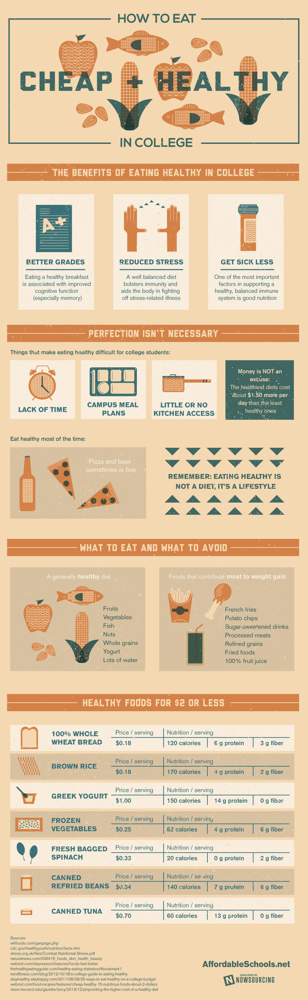

Thank you for signing the petition!

We are your ultimate guide to finding affordable and delicious dining options around CUNY campuses.
Whether you're a student looking for a quick bite between classes or a visitor exploring the area, YumCUNY has something for everyone.
Explore our website to discover hidden gems, read reviews, and plan your next culinary adventure!
Welcome to YumCUNY, your guide to affordable dining options around CUNY campuses!
At YumCUNY, we are dedicated to helping CUNY college students find budget-friendly dining options that fit their needs. Whether you're looking for a quick bite between classes or a sit-down meal with friends, we've got you covered.
Our platform is designed to make it easy for you to discover delicious and affordable eats near your campus. From food trucks to hidden gems, we'll help you navigate the culinary landscape of CUNY.
Explore our website to learn more about our mission, discover featured dining spots, and get tips on making the most of your dining experience as a CUNY student.
If you have any questions, feedback, or inquiries, feel free to reach out to us:
Visit our location around any CUNY campuses:
Explore our interactive map to find the nearest dining options:
This section provides a review of students' experiences with the affordable meal options around the campus. It includes feedback on restaurants, food trucks, and overall satisfaction.
YumCUNY is dedicated to aiding CUNY college students in discovering budget-friendly dining options around campus. Our platform is meticulously tailored to accommodate students seeking affordable meal choices that align with their budget constraints and busy academic schedules.
Why?
Hunger on college campuses directly affects students' academic performance, physical health, and overall well-being. Students experiencing food insecurity may struggle to concentrate in class, leading to lower grades and diminished educational outcomes. Additionally, inadequate nutrition can weaken students' immune systems and contribute to long-term health issues. Addressing hunger on college campuses is essential for fostering a supportive and equitable learning environment.
This problem can have lasting effects on the campus community, especially addressing food accessibility and affordability issues.
Why?
Food accessibility and affordability impact students' nutrition, health, and well-being. Limited access to nutritious food can lead to health issues like malnutrition and obesity. Financial strain from high food costs can increase stress and affect mental health and academic performance, making it crucial to address for a supportive campus environment.
Join us in supporting our cause to ensure that all students in the CUNY community have access to affordable and nutritious dining options. Food insecurity on college campuses is a critical issue that can impact students' academic performance, physical health, and overall well-being. By signing this petition, you are advocating for positive change and helping to create a supportive environment where every student can thrive.
🖊️ Steven from Brooklyn College supports this.
🖊️ Alex from Queens College supports this.
🖊️ Camila from Hunter College supports this.
"🖊️ " + count + " people have signed this petition and support this cause.";
Thank you for signing the petition!
A comprehensive guide offering tips and advice for students on navigating campus dining options, making healthier choices, and advocating for better food policies.
In surveys, students prioritize affordability, extended operating hours, and continuous access to dining hall food on campus, highlighting the importance of addressing these factors to ensure equitable food access.